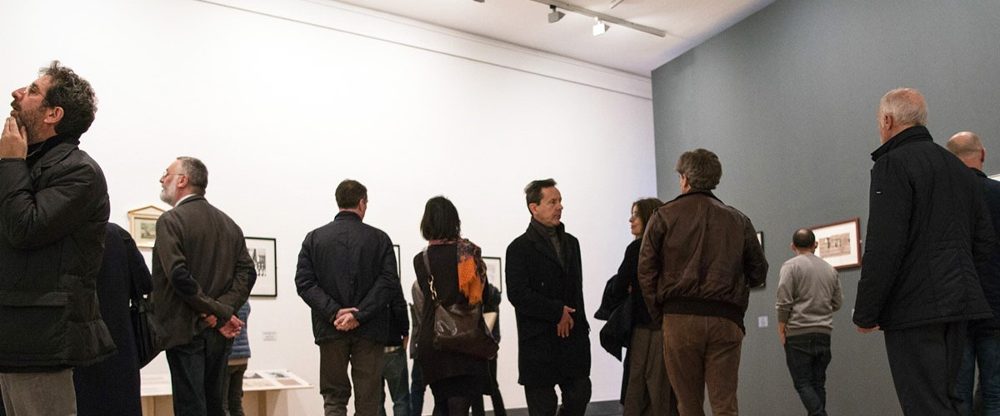

GAMeC PER PICCOLI E GRANDI
Il Dipartimento Educativo della GAMeC progetta percorsi e attività per avvicinare alle opere d’arte bambine e bambini di ogni età attraverso il gioco e il dialogo e per rendere il museo un’esperienza da condividere.
Oltre ad attività speciali, come letture animate e corsi di tecniche artistiche, gli educatori e le educatrici GAMeC accompagnano le famiglie e i bambini alla scoperta dell’arte attraverso alcuni appuntamenti abituali:
Domenica al museo – Speciale famiglie
Percorsi di visita con attività dedicati alle famiglie con bambini e bambine da 6 a 11 anni per scoprire le opere a partire dall’osservazione condivisa, sviluppando racconti ed esperienze nelle sale del museo.
Kids Lab
Laboratori creativi dedicati a bambine e bambini dai 3 ai 6 anni e dai 6 agli 11 anni per scoprire alcune delle opere più curiose delle mostre attraverso divertenti attività.
Baby Art Tour
Un percorso dedicato alle mamme, ai papà e a chiunque – nonne e nonni, baby sitter, parenti – desideri condividere con bambine e bambini sotto i 3 anni un momento di creatività e curiosità per vivere il museo attraverso le sue forme, indagandolo con il corpo e i sensi.
Dal 2021 in museo è disponibile il BABY PIT-STOP.
DI-SEGNI
Letture animate di albi illustrati in italiano e in Lingua dei Segni Italiana per bambine e bambini dai 4 agli 11 anni.
Artoteca
Un’educatrice o un educatore museale sarà a disposizione del pubblico per fornire indicazioni e soddisfare curiosità legate alla mostra, e distribuirà alle famiglie in visita strumenti utili per scoprire il percorso espositivo insieme ai propri bambini e bambine, rendendo il museo una Artoteca, una ludoteca delle arti, da percorrere e vivere da protagonisti, all’insegna dello stupore e della meraviglia.
Compleanno alla GAMeC
Per le feste di compleanno di bambini, bambine, ragazzi e ragazze dai 3 ai 13 anni è possibile prenotare una divertente esperienza nelle sale del museo e affittare i nostri spazi per una merenda da condividere con amici e amiche.
PROPOSTE PER ADULTI
Nella convinzione che non si smetta mai di imparare e che la long life learning education sia una delle funzioni più importanti che il museo deve esercitare all’interno della società, in occasione delle mostre temporanee GAMeC propone un calendario di visite e laboratori per adulti per offrire alle singole persone la possibilità di un percorso guidato o un’esperienza all’interno degli spazi espositivi.
Le proposte del Dipartimento Educativo dedicate agli adulti prevedono inoltre l’attivazione periodica di corsi di disegno e pittura dal vero, di illustrazione, scultura e fotografia, ma anche di avvicinamento e approfondimento dell’arte dal Novecento alla contemporaneità.
Il Dipartimento Educativo lavora per rendere accessibile a tutti ciascuna attività, pertanto vi invitiamo a segnalarci le esigenze di bambine e bambini con disabilità o particolari necessità per accoglierli al meglio.
I nostri spazi sono attrezzati per accogliere workshop di sperimentazione, anche in occasione di feste di compleanno, in cui scoprire il museo attraverso un laboratorio creativo e divertente.
Le proposte possono essere realizzate su richiesta, presso aziende, associazioni, biblioteche, gruppi di amici.
Per informazioni e richieste:
servizieducativi@gamec.it
Tel. 035 270272 (interno 412)
Mob. 389 1777525
Lunedì-Venerdì, ore 09:00-16:00
GAMeC PER PICCOLI E GRANDI